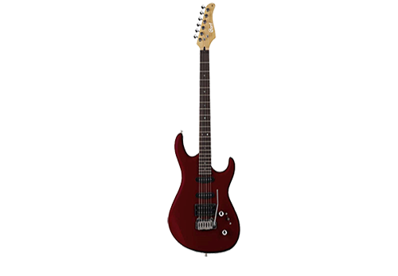

История Cort строится вокруг работы Jack Westheimera. Он был одним из первых промоутеров японских и южнокорейских гитар. Имя Cort было сокращено от Cortez, бренд, который производил, в основном акустические гитары, произведенные в Японии по контракту с Westheimer. Также он основал компанию Yoo-Ah с партнером Young H. Park в 1973 году и завод в Южной Корее. Впоследствии она стала нынешней фабрикой Cort.
Бренд Cort начали использовать только в 1970-х годах, когда он стал завоевывать внимание своей собственной репутацией. Park стал генеральным директором Cort. Основной завод компании был расположен в городе Инчхон, Южная Корея. Cort открыли еще один завод по производству акустических гитар в Тэджоне. Кроме того, появился и третий, расположенный в городе Сурабая, Индонезия. В общем количество гитар, выпущенных Cort за год, составляет больше миллиона.
Список товаров
Гитары
|
Cort AB850F
598.00 руб. Купить |
Cort AD 810E
324.00 руб. Купить |
Cort CEC-3
478.00 руб. Купить |

Cort Aero – 11
544.00 руб. Купить |
Cort Arena 1
828.00 руб. Купить |

Cort G254
398.00 руб. Купить |
|
Cort A4
834.00 руб. Купить |
Cort ARONA4
714.00 руб. Купить |
Cort GB4-CUSTOM
745.00 руб. Купить |
Комбоусилители для гитар
|
Cort CM10G
130.65 руб. Купить |
Cort GE15B
190.00 руб. Купить |
Cort GE30B
336.00 руб. Купить |
 |
 |
 |
 |
Все товарные знаки являются собственностью соответствующих владельцев. © Plarium, 2014 - Все права защищены